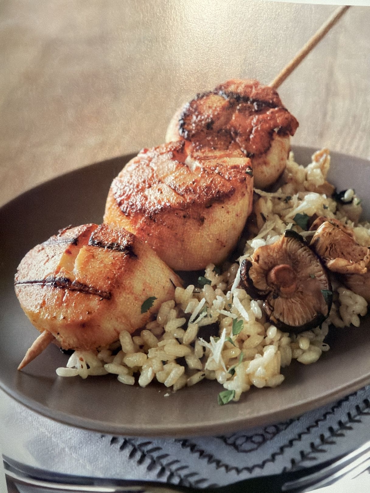

Hero Image

Plated scallops over mushroom risotto.
Description
Don’t be intimidated. Risotto is easy—just take your time. This dish pairs quickly grilled scallops with creamy mushroom risotto for a restaurant-style seafood plate that still feels very doable at home.
Ingredients
- 2 1/2–3 lbs large sea scallops
- 6 long metal skewers
- 1/2 cup No-stick Grilling Marinade for Seafood
- 2 tsp kosher salt
- 1 tsp freshly ground black pepper
- 1 recipe Mushroom Risotto
Instructions
- Divide the scallops evenly onto the 6 skewers.
- Brush the scallops with the marinade and allow them to marinate at room temperature for 15 minutes.
- Sprinkle the scallops with the salt and pepper.
- Cook over direct high heat until the scallops are opaque in the center, 5–7 minutes, turning once while cooking.
- Place the risotto on serving dishes and remove the scallops from the skewers.
- Place the scallops atop Mushroom Risotto and serve.
Tips
- Use large dry scallops if possible for the best sear.
- Don’t over-marinate—15 minutes is enough.
- Turn the scallops once and pull them as soon as the centers turn opaque.
Note: Risotto is easy. Just take your time.